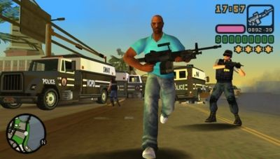

GTA Vice City Stories
 De: La Frikipedia, la enciclopedia extremadamente seria.
De: La Frikipedia, la enciclopedia extremadamente seria.
De la serie Videojuegos:
GTA Vice City Stories

un Vice City que no se necesita
| Desarrollado por:
|
Una roca que se estrello en el Norte
|
| Distribuido por:
|
Take2
|
| Diseñado por:
|
Sam Houser (de Icarly)o algo asi.
|
| Motor
|
Motor Renault 2.0dCi
|
| Género(s)
|
Tortazos con pistolas.
|
| Fecha de lanzamiento:
|
Hace tiempo...
|
| Modos de juego:
|
Agitar antes de usar.
|
| Requisitos:
|
Carnet de conducir, permiso de residencia, papeles del jugzado ¿Un momento? Esto no va aqui.
|
| Disponible en:
|
la mision 2
|
| Formatos:
|
Dividi y Uimidi.
|
| Edades:
|
Para mayores que yo.
|
| Puntuaciones:
|
12/10
|
ser vandalico, aquí se aprende
GTA Vice City Stories es un videojuego didáctico, como los del resto de su saga, que se parece misteriosamente al anterior juego de la misma saga GTA Vice City, los responsables de editar el videojuego afirman que ha sido una coincidencia en el nombre y la ciudad. La ciudad en cuestión, Vice City se encuentra en el centro del desierto de Gobi. El presidente de la glamurosa isla es Micky Mouse el que cuenta con la inestimable ayuda de el Pato Donald.
Características
 Victor Vance perseguido por la policia de vice city, al haberse bajado una cancion de regeton en ares.
Personajes
GTA Vice City Stories cuenta con un reparto estelar de personajes, elegidos a dedo por mi primo el subnormal que tiene ligeros problemas mentales.
- Victor Vance: Es el protagonista del videojuego, aunque debería ser el malo malísimo del mismo, en realidad es una buena persona, o eso parece, puesto que se carga a sus enemigos a punta de pistola, y deberia recalcar que es un negro pelado cabeza de
pene bola de bolos y que siempre para cagando a su hermano cuando habla.
- Lance Vance Gaynce: Es el hermano del protagonista, (o eso he deducido yo al ver que tienen el mismo apellido), pues es un drogadicto que se dedica al tráfico de drogas y que jode la vida a nuestro protagonista.
- Martínez: El verdadero malo malísimo del juego, es general del ejército (según dicen por mantener relaciones sexuales con Micky Mouse) y es el enemigo de Victor desde la primera misión hasta la última.
- Phil Cassidy: Un
borracho de mierda amigo de Victor Vance, al que ayuda en alguna ocasión.
- Louise Cassidy: La novia de Victor Vance en el intervalo de tiempo que transcurre desde que matas a su marido hasta que la matan a ella.
- Mary Jo Cassydi: La hija de la antes mencionada, famosa por matar gente lanzando su chupete radioactivo.
- Hermanos Mendez: Los que acaban con la vida de Louise Cassidy, y que posteriormente son asesinados por Victor Vance que los mató disparándoles con su ametralladora de "Termineitor".
- Umberto Robina:Un cubano bigotudo de mierda que no sabe gilear y llora por todo .Su padre es dueño de una cafetería en Little Havanna.
Bandas
- Vance: La banda de los hermanos niggas que se la ganaron gracias a
un yanki de mierda maltratador que murió por payaso .
- Los yankis: La peor chusma de paletos borrachos y maltratadores su negocio se pierde al morir su líder y el negocio lo cogieron los Vance y eliminaron a los yankis asquerosos cambiándolos por niggers y blanquitos.
- Cubanos: Los hijos de Fidel Castro inmigrando a unas chabolas de Vice City con coches súper horteras.
- Los Méndez: La union de dos hermanos subnormales, malotes vendiendo droga y prostituyendo
viejas pasadas
- González: Otra unión de dos subnormales el gordo González
todo el día esnifando cocaína y el Díaz otro gordo pedófilo.
- Jerry Martínez: El
gilipollas mencionado antes sargento del ejército que jodió a Vance. Se cree que fue un soldado resentido por las palizas del sargento de chaqueta metálica y que en vez de matar vietnamitas, se puso a negociar con ellos con el opio.
- Cholos: Mexicanos que saltaron la frontera y se les ocurrió fundar una mafia extorsionadora haciendo rivalidad con la banda de los
asquerosos paletos yankis.
- Moteros: Los más malotes con unas motos
de la ostia que te sacan las escopetas y te matan en 0,
- Sharks: No tienen nada que ver con la historia solo se les pusieron para ocupar negocio en el mapa, se dice que son un conjunto de todo tipo de razas que sueñan con hacer volar un tiburón.
Historia
Por lo visto, Vice City es el paraiso de cualquier Yonky, todo la historia del juego va por un pequeño desliz con maria.
Eres un pringado del ejército, pero claro, como eres subnormal, guardas la droga de tu colega Martínez en tu barracón y te pillan con una furcia. ¿Y qué pasa? Que te hechan del ejército. Y no te queda otra que irte a vivir a una casa que te deja el borracho de Phil, bueno, te echas novia, y como la matan, matas a los matones que han matado a tu novia matando a un montón de gente mientras matas matas y... y... Me he perdido. Pero robas una helicóptero militar, sin ponerte ni rojo, bombardeas un edificio de hierro (o por lo menos eso parece, puesto que cualquier otro edificio ya se habría caído) y matas a esos tres a con la una ametralladora que pesa más que un camión trailer cargado de vigas de metal. FIN
Radios del juego
En este juego tenemos unas cuantas radios con música que le gustan a tus padres o abuelos. Pero si tienes buen oído te puede gustar alguna canción.
- Flash: Radio de música pop de los 80's, cuando el pop no era Justin Bieber, Disney o
Gay Direction One Direction.
- V-Rock: Favorita de los metaleros que juegan este jueguito, matando chopos y gritando.
- Paradise FM: Radio de música disco, pero no tiene mucho raiting.
- VCPR: Estación de charlas, aquí tiene entrevistas, noticias, un programa de radio teatro de un detective de los 50's.
- VCFL: Radio de soul competidora de Emotion, es aburrida y la quitan por aburrida.
- Fresh FM: Radio escuchada por
negros, delincuentes buena gente que gusta del hip-hop.
- Radio Espantosos: La misma del otro juego, solo que tiene menos canciones y no esta el locutor loco si no otro idiota que nadie conoce y la escuchan los cholos.
- Emotion 98.3: Radio para románticos de la ciudad, tiene una sección que te dice posisiones sexuales (verídico), con un locutor Emo, luego lo remplanzan con el que decía las posiciones.
- Wave 103: Radio del famoso movimiento ochentero New Wave, conducido por un chicco normal y una perra que lo jode.
Controversia
El juego en un principio fue lanzado para ser un juego didactico en los estados unidos,ayi podrias aprender a utilizar todo tipo de armas,bombas,vehiculos de combate,partirle la madre a todo dios...etc.Pero al parecer el juego era altamente violento para algunos padres y educadores,a si que le pusieron pegi +18. pero que pedazo de pelotudos que son.
Autor(es):
- MURO DE AGUAS
- Max Slug
- Aque
- Taser
- Azulejos
- El Sevillano
- J u ERgEN
- MDCFM
- Dark temptation
- TaRkFreak
Frikipedia 2005-2016, Licencia
GFDL 1.2 - Extraído por FrikiLeaks